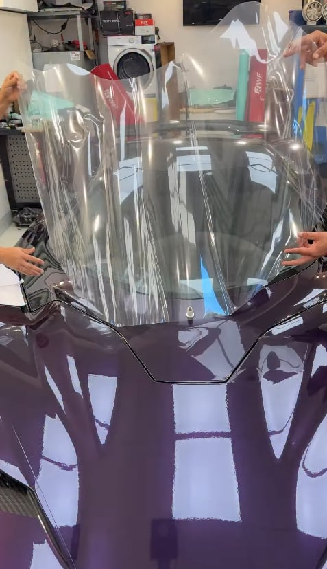
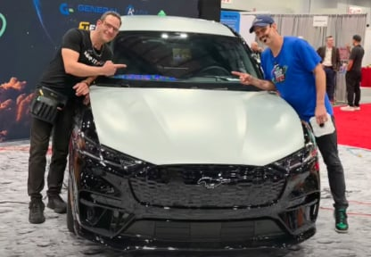

P / 01
Wrap intermedio
Entiende cómo se comporta el vinilo y aprende a tomar decisiones sobre una pieza real.
Ver el programa
De mirar
a saber
hacer.
Aprende wrapping, PPF y tintado con Luis Vizcarrondo. Entiende el material, practica la técnica y construye tu criterio como instalador.
Encuentra tu cursoTu experiencia importa. Selecciona tu punto de partida y descubre qué programa puede encajar contigo.
¿No lo tienes claro?
Te ayudamos a elegir
Wrap intermedio trabaja preparación, material, tensión y remates. Es el punto de partida para construir o reforzar tu técnica.
Entiende cómo se comporta el vinilo y aprende a tomar decisiones sobre una pieza real.
Ver el programaWrap avanzado se centra en geometrías complejas, interiores y terminaciones. Recomendado si ya tienes una base práctica.

Zonas complejas, encuentros y materiales que exigen una lectura más precisa.
Ver el programaDos técnicas distintas, con sus propios materiales y procesos. Explora el programa que te interesa antes de elegir.

Trabaja la aplicación de Clear PPF y color PPF entendiendo la adherencia y el proceso.
Ver el programa
Práctica centrada en cristales de puerta, lunas traseras y zonas de acceso difícil.
Ver el programaTrack Creativo
Formación y comunidad

Su recorrido en instalación de vinilos dio lugar a una academia: un espacio para compartir técnica, responder preguntas y aprender con otras personas.
Conoce al formadorLos Wrap Days reúnen a instaladores para aprender sobre un proyecto compartido. Distintas manos, experiencias y formas de resolver una pieza.

Cuéntanos tu experiencia y la técnica que quieres aprender. Te orientamos sobre el programa y su próxima convocatoria.
Encontrar mi formación